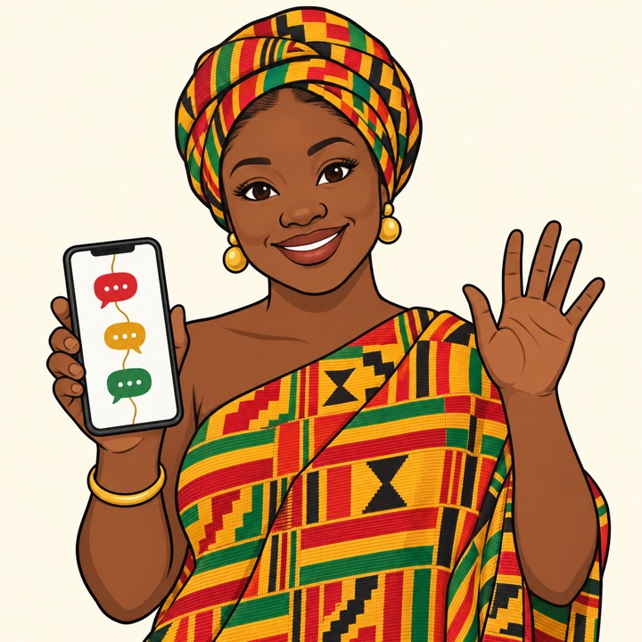

ホームページの申込を、
LINEとSlackで
取りこぼさない。
ツナガーナ人は、HPの申込とLINEとSlackを受付番号ひとつでつなぐ同僚です。申込をきっかけにお客様が公式LINEの友だちになり、前日の参加リマインド、参加後のアンケート、そしてその後もお知らせでつながり続けることまで、LINEで自然にできるようになります。社内のやりとりはSlackの1スレッドに集約。今の申込フォームを活かして導入します（受付番号とLINEボタンを加える改修を含みます）。
- 前日の参加リマインド
- 参加後のアンケート
- その後もLINEでつながり続ける

確定 10/14 10:00※画面はイメージです
申込は来ているのに、
その先でこぼれていませんか？
フォームの通知メールが他のメールに埋もれ、返信が遅れる
誰が対応したか、日程は決まったかが担当者の頭の中にしかない
HPから来た人とLINEで話している人が、同じ人なのか分からない
前日の確認連絡を忘れて、当日に来ない人が出る
体験や見学に来た人と、その後の連絡が途切れてしまう
参加した人の感想や、申し込まなかった理由を聞けていない
申込者とLINEでつながることで、
来る前も、来た後も、その後も手が届きます。
受付番号ひとつで、
3つのツールがつながる
新しいツールを覚える必要はありません。お客様はいつものLINE、担当者はいつものSlackのまま。
申込はこれまでどおりHPで完結。受付番号を発行し、完了画面とメールに表示します。
番号を受け取ると、申込内容をLINEの友だち情報に自動で書き込みます。
通知・お客様の発言・確定・リマインドが、申込ごとの1スレッドに集まります。
名前の由来は、「つながる」＋ガーナ。ガーナの伝統文様「アディンクラ」には、人と人の結びつきを表す鎖の輪（ンコンソンコンソン）があります。
LINEでつながると、
申込の「前」も「後」も手が届く
受付番号を送ってもらうことで、お客様が公式LINEの友だちになります。そこから先は、来る前・来た後・その後まで、LINEでお客様に寄り添えます。
- 申込HPから
- LINEで番号を送る申込 → LINE
- 前日参加のリマインド
- 当日来店・参加
- 翌日参加後のアンケート
- その後お知らせでつながり続ける
前日に、参加のリマインドが届く
予約の前日に、日時と場所をLINEでお送りします。普段使っているLINEに届くので気づきやすく、「うっかり忘れていた」による欠席を防ぐ助けになります。
- 担当者は日程を決めて書くだけ。送信は自動
- 送ったことは担当者にも知らせるので、送り忘れの心配がない
- 送る時刻や文面はお店に合わせて決められる
参加後に、アンケートを集められる
担当者が「来店済み」の印を付けると、お礼とアンケートがLINEで自動で届きます（翌日に送るなど、タイミングも決められます）。LINEの中で答えられるので回答の手間が少なく、答えはお客様の情報として保存されます。
- 満足度や感想、入会・購入を迷っている理由を聞ける
- 回答はお客様の情報にひもづいて残るので、次の連絡に活かせる（同じ質問は最新の回答で更新）
- 紙のアンケートの集計や入力がいらない
すぐ決めなかった人とも、つながり続けられる
体験や見学のあと、その場で申し込む人ばかりではありません。LINEでつながっていれば、空き状況やキャンペーン、役立つ情報を少しずつ届けて、「また今度」を「今」に変えるきっかけを作れます。いわゆる「ナーチャリング（見込みのお客様を育てること）」です。
- 担当者が付けた印（「体験済み」「迷い中」など）やアンケートの回答をもとに、送る相手を分けられる
- あらかじめ決めた順番・間隔で、自動で届けられる
- LINEなので気づきやすく、そのまま返信ももらえる
※画面はイメージです。送る内容・タイミングは導入先に合わせて設定します。アンケートとお知らせ配信は、導入時に設定し、導入先の環境でテストしてお届けする機能です。
お客様がすることは、
受付番号をLINEで送るだけ
- お客様STEP 01
HPから申込む
送信すると受付番号が発行され、Slackに申込通知が届きます。
- お客様STEP 02
LINEで番号を送る
完了画面のボタンでLINEが開き、番号は入力済み。友だち追加して送るだけ。
- 自動STEP 03
ひとりの人としてつながる
申込内容をLINEの友だち情報に書き込み、スレッドで担当者に知らせます。
- 担当者STEP 04
「確定」と書くだけ
スレッドに
確定 10/14 10:00と書けば予約が入ります。 - 自動STEP 05
前日に自動リマインド
前日18時（設定可）にLINEで送り、送ったことを担当者に知らせます。LINEでつながっていない方は、電話・メールでの連絡を促します。
1件の申込の経過が、
ひとつのスレッドで追える
通知・お客様の発言・確定・リマインドの記録は、すべてこのスレッドに集まります。誰が・いつ・何をしたかが時系列で残るので、引き継ぎや聞き直しが減ります。お客様へのLINEの送信は、専用のチャット画面から行います。
- LINEでつながったかどうかが一目で分かる
- お客様のLINEの発言もスレッドに届く
- 確定・変更・キャンセルは書くだけ
- 通知は担当者あてのメンション付き
LINE連携: 受付番号の送信待ち
水曜の10時は空いていますか？
👀 1
確定 10/14 10:00✅ 1
表示内容は説明用の見本です。お名前・文言は導入先に合わせて設定します。
現場が増やす作業は、
ほとんどありません
LINE登録を強制しない
申込はHPで完結するので、LINEを使わない方も取りこぼしません。つながったかどうかはスレッドで分かります。
いつものチャットに集まる
通知も記録も、普段使っているSlackの申込スレッドに集まります。お客様へLINEを送るときだけ、専用のチャット画面を使います。
書くだけで予約・リマインド
「確定 10/14 10:00」と書けば予約が入り、前日の決まった時刻（例: 18時）にLINEでリマインドを送ります。変更・キャンセルも同じ書き方です。
失敗も同じ場所に出る
番号の打ち間違いや送信・書き込みの失敗の多くは、⚠️ 付きで同じチャンネルに知らせます。ごくまれに通知が出ない失敗もありうるため、リマインドの📩が出ているかを確認する運用もあわせてご案内します。
いつでも元に戻せる
HP側の設定を外して再公開すれば、従来の申込フローに戻ります。Slackへの自動書き込みも設定で個別に止められます。
データは貴社のアカウントに
LINE・Cloudflare・Slackは貴社名義でご用意いただきます。照合のために預かる申込データは60日で自動的に消えます。
「申込 → 日程調整 → 来店」が
ある仕事に
- スクール・教室の体験レッスン
- スポーツ施設・ジム
- サロン・治療院の初回予約
- 住宅・不動産の見学予約
- 説明会・個別相談会
- 採用の応募受付
問い合わせフォームのあるHPと、社内連絡にSlackをお使いであることを想定しています。それ以外の場合もご相談ください。
自社で検証した仕組みを、
導入先の環境でテストしてお届けします
作り手が、自社で検証している
申込 → LINE連携 → スレッドへの通知 → 予約の確定までは、自社の事業で本物のLINE・Slackを使ってテストしています。リマインド・アンケート・お知らせ配信は、導入時に設定し、導入先の環境でテストして提供します。
本番前に、本物の環境でテスト
導入時はテスト申込で、LINE連携・確定・リマインド・失敗時の通知までを実際に通し、結果を記録してお渡しします。
導入の流れ
本物のLINEとSlackで試してから、本番に切り替えます。
- 01
今の流れを伺う
申込から来店まで、誰が・何で・どう連絡しているか。担当者、通知先、リマインドの時刻などを決めます。
- 02
アカウントの準備
LINE公式アカウント・Cloudflare・Slackを貴社名義でご用意いただきます。手順はご案内し、パスワードや鍵はご自身で入力していただきます。
- 03
構築と結線
HPのフォームに受付番号とLINEボタンを加え、LINE・照合サーバー・Slackをつなぎます。
- 04
本物の環境でテスト
テスト申込で、LINE連携・確定・リマインド・アンケート・お知らせ配信・失敗時の通知までを実際に通し、結果を記録します。
- 05
担当者のリハーサルと本番
担当者の方に申込から体験後のフォローまでを一度通していただき、問題がなければ本番に切り替えます。
料金
構築費は、今の流れを伺ってからお見積もりします。
- 今の申込の流れのヒアリングと設計
- HPのフォームへの受付番号・LINEボタンの追加
- LINE・照合サーバー・Slackの結線
- 本物の環境でのテストと記録
- リマインド・アンケート・お知らせ配信の初期設定
- 担当者の運用リハーサル
- LINE公式アカウント：無料プランから。月200通までで、スタッフからの送信・リマインド・アンケートの案内・お知らせの配信が数に入ります（自動応答は入りません）
- Cloudflare：無料プランで始められます。画像の保存にR2を使うためカード登録が必要で、容量を超えた分は課金されます（通常の使い方では無料枠内の想定です）
- Slack：お使いのプランで動くかを導入前に確認します
- アンケートやお知らせ配信を続ける場合は、LINEの有料プランが現実的です。件数に応じてご案内します
- 導入後の保守・更新対応の範囲は、お見積もりの際にご説明します